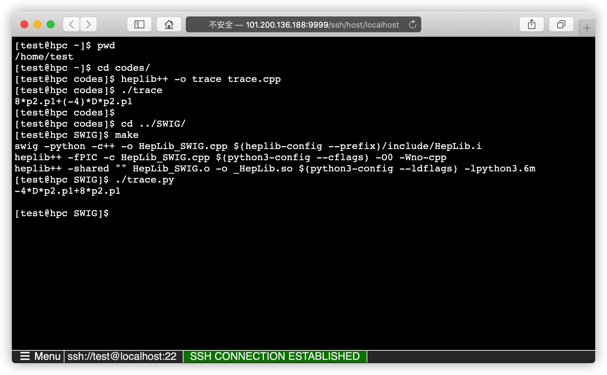

Try & Run online
One can try the HepLib online.
A cloud machine
One can try and run HepLib on a small private cloud machine with the help of webssh.

HepLib @ replit
One can also open @heplib and click the Run button, after the initialization of HepLib, one will get the information to compile codes/trace.cpp or the python interface.